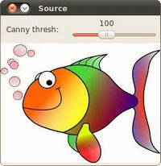

轮廓检测
轮廓可以简单地解释为连接具有相同颜色或相近像素值所有连续点（沿边界）的曲线。轮廓是用于形状分析以及对象检测和识别的有用工具。基本流程
为了获得更高的准确性，请使用二进制图像。因此，在找到轮廓之前，请应用阈值或Canny边缘检测。在OpenCV中，找到轮廓就像从黑色背景中找到白色物体。因此请记住，要找到的对象应该是白色，背景应该是黑色。
findContours()
void findContours(Mat image, vector<vector<Point> > & contours, vector<Vec4i> & hierarchy, int mode, int method, ] Point offset=Point())
void findContours(Mat image, vector<vector<Point> > & contours, int mode, int method, ] Point offset=Point())
参数
image —— 源输入，一个8位单通道图像。非零像素被视为1。零像素保持为0，因此图像被视为binary。
你可以使用compare，inRange，threshold，adaptiveThreshold，Canny和其他方式
创建灰度或彩色的二进制图像。
如果mode等于RETR_CCOMP或RETR_FLOODFILL，则输入也可以是标签（CV_32SC1）的32位整数图像。
contours —— 输出，检测到的轮廓。每个轮廓都存储为点的向量（例std::vector<std::vector<cv::Point> >）
hierarchy —— 可选的输出向量（例std::vector<cv::Vec4i>），其中包含有关图像拓扑的信息。
它具有与轮廓数量一样多的元素。（后章细谈）
mode —— 轮廓检索模式，请参阅RetrievalModes
method —— 轮廓近似方法，请参见ContourApproximationModes
offset —— 可选偏移量，每个轮廓点都将偏移该偏移量。如果从图像ROI中提取轮廓，
然后在整个图像上下文中对其进行分析，这将非常有用 offset=(dx, dy)
枚举类
RetrievalModes
RETR_EXTERNAL 仅检测最外部轮廓。
RETR_LIST 检索所有轮廓，而不建立任何层次关系。
RETR_CCOMP 检索所有轮廓并将其组织为两级层次结构。
第一层，组件由图像每个形状(白色)的外部边界组成。在第二层，由孔洞(黑色)的边界组成。
如果所连接零部件的孔内还有其他轮廓(白色)，则该轮廓仍放在第一层。
RETR_TREE 检索所有轮廓，并重建嵌套轮廓的完整层次。
RETR_EXTERNAL
RETR_LIST/RETR_TREE/RETR_CCOMP 唯独hierarchy的值不一样
ContourApproximationModes
CHAIN_APPROX_NONE 存储所有轮廓点。 CHAIN_APPROX_SIMPLE 压缩水平，垂直和对角线段，仅保留其端点。例如，一个直立的矩形轮廓编码有4个点。
左：CHAIN_APPROX_NONE(几百个点描述); 右：CHAIN_APPROX_SIMPLE(4个点描述)
例子
我们将使用Canny边缘检测为例，findContours()后drawContours()显示轮廓。来源#include <opencv2/opencv.hpp>
#include <iostream>
using namespace cv;
using namespace std;
Mat src_gray;
int thresh = 100;
RNG rng(12345);
void thresh_callback(int, void* );
int main() {
Mat src = imread("HappyFish.jpg");
if( src.empty() ) {
cout << "Could not open or find the image!\n" << endl;
return -1;
}
cvtColor( src, src_gray, COLOR_BGR2GRAY );
blur( src_gray, src_gray, Size(3,3) );
const char* source_window = "Source";
namedWindow( source_window );
imshow( source_window, src );
const int max_thresh = 255;
createTrackbar( "Canny thresh:", source_window, &thresh, max_thresh, thresh_callback );
thresh_callback( 0, 0 );
waitKey();
return 0;
}
void thresh_callback(int, void* )
{
Mat canny_output;
Canny( src_gray, canny_output, thresh, thresh*2 );
vector<vector<Point> > contours;
vector<Vec4i> hierarchy;
findContours( canny_output, contours, hierarchy, RETR_TREE, CHAIN_APPROX_SIMPLE );
Mat drawing = Mat::zeros( canny_output.size(), CV_8UC3 );
for( size_t i = 0; i< contours.size(); i++ )
{
Scalar color = Scalar( rng.uniform(0, 256), rng.uniform(0,256), rng.uniform(0,256) );
drawContours( drawing, contours, (int)i, color, 2, LINE_8, hierarchy, 0 );
}
imshow( "Contours", drawing );
}
